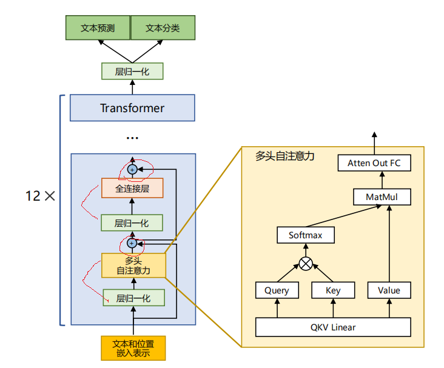
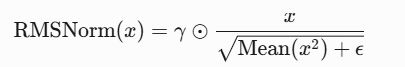
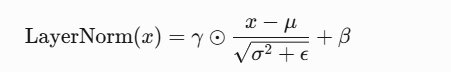
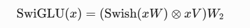
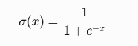
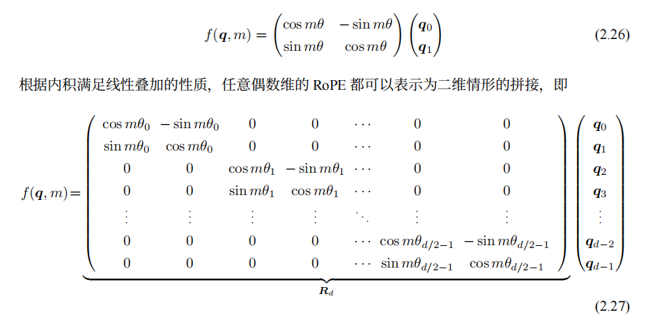
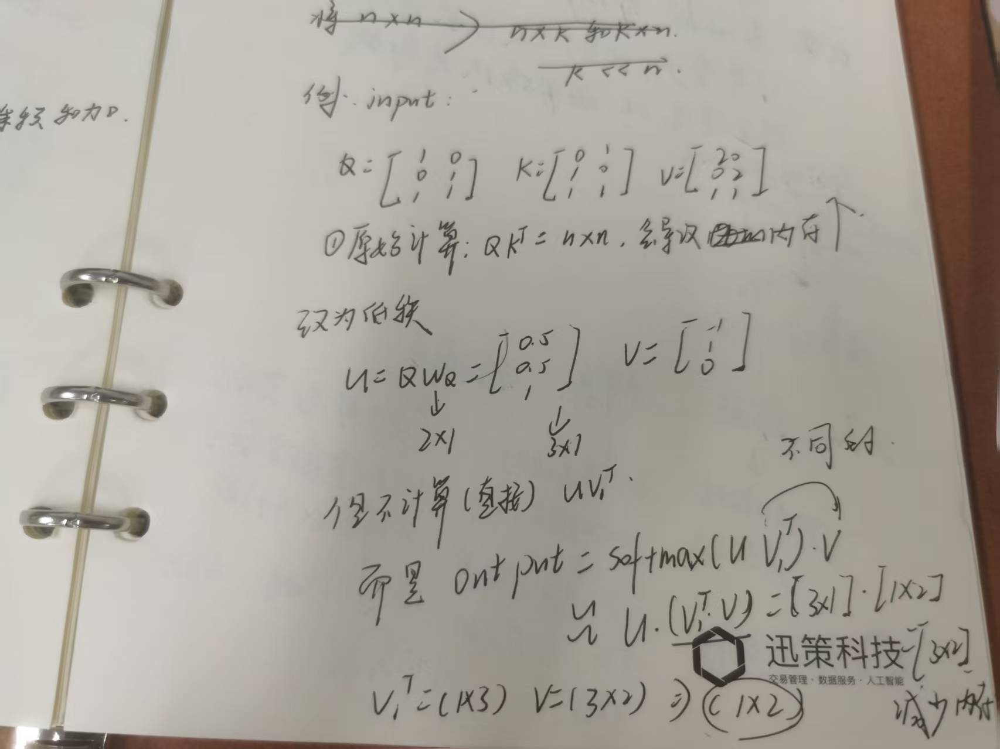

LLaMA&混合专家模型
# LLaMA model structure
LLaMA 是基于 transformer 的 decoder 部分构建的，采用前置层归一化、使用 RMSNorm 规划函数，激活函数更改为 SwiGLU，使用旋转位置嵌入更改的 decoder 模型。更改的位置如下所示：

-
RMSNorm 函数：

原始层归一化函数：

对比 LayerNorm RMSNorm 归一化目标 均值中心化 + 方差缩放 仅均方根（RMS）缩放 计算复杂度 较高（需计算均值和方差） 较低（仅需均方值） 参数数量 γ+β（2d 参数） 仅 γ（d 参数） -
SwiGLU
SwiGLU 是门控线性单元（GLU）的变体，公式如下：
第二个公式的激活函数是 sigmoid，sigmoid 函数特点：

当 β 趋向于 0 时，相当于 y=x/2，线性函数，当 β 趋向于无穷时（x>0,x<0,x=0)，相当于 ReLU 函数，当 β=1，swish 光滑且非单调。
Swish (xW) 为门控权重（相当于选择遗忘比例），用权重对 xV 逐元素加权，用 W2 映射回原维度。
-
RoPE（待）
传统 PE，model 需要学习隐式位置关系，而 RoPE 通过旋转矩阵直接编码位置，即将位置信息通过旋转矩阵融合 key\query 向量中，直接建模相对位置依赖关系，value 是不需要旋转的:

以上三个改变与原 decoder 结合实现了 LLaMA
# 注意力机制优化
在 Transformer 结构中，自注意力机制的时间和存储复杂度与序列的长度呈平方的关系，因此占用了大量的计算设备内存并消耗了大量的计算资源，比如：
1 | input: Q K |
那么就有这种情况：
- 显存占用：
- 计算时间：
每次注意力计算需 seq_len 方 * d 次操作，seq_len=32k*, d=1024 时约为 10 的 12 次方次操作。
所以需要方法去优化这一问题，以下举例两种方法：
-
稀疏注意力
- 全局注意力：在稀疏注意力中保留少量全局节点（如 [CLS] token 或特定位置），这些节点可以与序列中所有其他位置交互。
- 带状注意力：每个 Query 只与固定宽度邻域内的 Key 交互（类似对角带状矩阵）
- 膨胀注意力：以固定间隔跳跃采样 Key
- 随机注意力：每个 Query 随机选择 r 个位置进行交互
- 局部块注意力：多个不重叠块交互
一般利用上述的复合模式 s
-
低秩注意力:

# 混合专家模型
混合专家模型 (MixedExpert Models，MoEs) 日益受到关注。依据大模型缩放法则，模型规模是提升性能的关键，然而规模扩大必然使计算资源大幅增加。因此，在有限计算资源预算下，如何用更少训练步数训练更大模型成为关键问题。为解决该问题，混合专家模型基于一个简洁的思想：模型不同部分（即 “专家”）专注不同任务或数据层面。
其实就是把模型内部的一组专用子网络，每个子网络负责处理数据中特定类型的任务，如：
- 输入句子是数学问题 → 激活 “数学专家”
- 输入是诗歌 → 激活 “文学专家”
优势：若 model 有 100 个专家，每次输入仅用 2 个，计算量少，而且每个专家通过训练集中学习特定模式，比通用模块更高效。
混合专家模型按照门控网络（Gate）类型，可以从广义上讲可以分为三个大类：稀疏混合专家模型（Sparse MoE）、稠密混合专家模型（Dense MoE）、软混合专家模型（Soft MoE）：
-
稀疏混合专家模型：input 之后，门控网络仅激活少数专家
-
稠密混合专家模型：所有专家激活，甲醛组合输出，这个是要计算每个 wi,bi 与 x 的结果
-
软混合专家模型：门控网络分配的权重直接融合不同专家的参数，得到 w (融合)，b (融合)，融合与 x 计算 = w*x+b
类型 专家激活方式 计算量 参数量扩展性 典型场景 稀疏 MoE 硬性 Top-k 选择（如 k=2） O(k⋅FFN) 极高（万亿级） 大规模预训练（Mixtral, GPT-4） 稠密 MoE 所有专家加权求和 O(N⋅FFN) 低（十亿级） 小规模多任务学习 软 MoE 软性稀疏权重 O(N⋅FFN) 中（百亿级） 平衡效率与稳定性需求